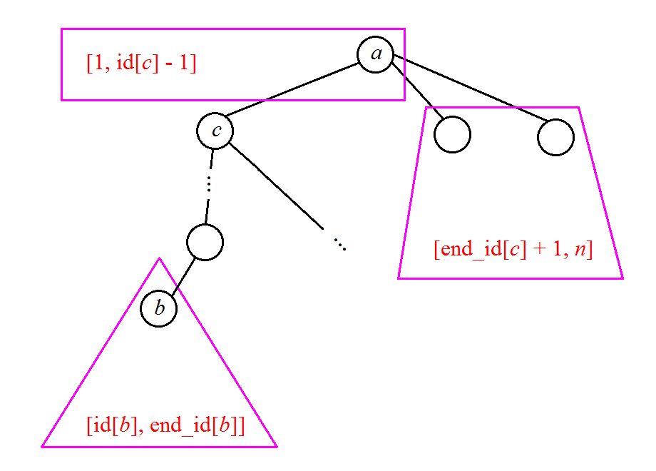

scx 非常喜欢玩一个叫做 "osu!" 的游戏，其中她最喜欢玩的模式就是接水果。由于她觉得这个游戏太简单了，于是发明了一个更加难的版本。
首先有一个地图，是一棵由 $n$ 个顶点、$n-1$ 条边组成的树 (例如图 $1$ 给出的树包含 $8$ 个顶点、$7$ 条边)。这颗树上有 $P$ 个盘子，每个盘子实际上是一条路径 (例如图 $1$ 中顶点 $6$ 到顶点 $8$ 的路径)，并且每个盘子还有一个权值。第 $i$ 个盘子就是顶点 $a_i$ 到顶点 $b_i$ 的路径 (由于是树，所以从 $a_i$ 到 $b_i$ 的路径是唯一的)，权值为 $c_i$。
接下来依次会有 $Q$ 个水果掉下来，每个水果本质上也是一条路径，第 $i$ 个水果是从顶点 $u_i$ 到顶点 $v_i$ 的路径。
scx 每次需要选择一个盘子去接当前的水果：一个盘子能接住一个水果，当且仅当盘子的路径是水果的路径的子路径 (例如图 $1$ 中从 $3$ 到 $7$ 的路径是从 $1$ 到 $8$ 的路径的子路径)。这里规定：从 $a$ 到 $b$ 的路径与从 $b$ 到 $a$ 的路径是同一条路径。
当然为了提高难度，对于第 $i$ 个水果，你需要选择能接住它的所有盘子中，权值第 $k_i$ 小的那个盘子，每个盘子可重复使用 (没有使用次数的上限：一个盘子接完一个水果后，后面还可继续接其他水果，只要它是水果路径的子路径)。scx 认为这个游戏很难，你能轻松解决给她看吗？

第一行包含三个正整数 $n, P, Q$ ($n, P, Q \leq 40000$)，分别表示树的大小、盘子的个数和水果的个数。
接下来 $n-1$ 行，每行两个正整数 $a, b$，表示树上的 $a$ 和 $b$ 之间有一条边。树中顶点按 $1$ 到 $n$ 标号。
接下来 $P$ 行，每行三个非负整数 $a, b, c$ ($1 \leq a, b \leq n; a \neq b; c \leq 10^9$)，表示路径为 $a$ 到 $b$、权值为 $c$ 的盘子。
接下来 $Q$ 行，每行三个正整数 $u, v, k$ ($1 \leq u, v \leq n; u \neq v$)，表示路径为 $u$ 到 $v$ 的水果，你需要选择第 $k$ 小的盘子，保证第 $k$ 小的盘子一定存在。
对于每个果子，输出一行一个整数，表示选择的盘子的权值。
考虑一个盘子 $(a, b)$，我们去寻找它能接住的水果 $(u, v)$ 的条件。
分两种情况讨论：
$\mathrm{LCA}(a, b) \notin \{a, b\}$
这种情况，如果不计顺序，则 $u$ 一定在以 $a$ 为根的子树中，且 $v$ 一定在以 $b$ 为根的子树中。
记·点 $x$ 的进、出 dfs 序分别为 id[x] 和 end_id[x]，则 $u, v$ 需要满足 $id[a] \leq u \leq end\_id[a]; id[b] \leq v \leq end\_id[b]$。
$\mathrm{LCA}(a, b) \in \{a, b\}$
不妨假设 $a = \mathrm{LCA}(a, b)$。
设 $c$ 为 $a$ 在 $b$ 的方向上的子节点 (如上图所示)。则可以发现，其中一个点 $u$ 一定在以 $b$ 为根的子树中。对另一个点 $v$，它要么在以 $a$ 为根的子树外，要么在 $a$ 的子树中非 $c$ 的那些子树。
也就是说，$v$ 在以 $c$ 为根的子树外，即 $id[b] \leq u \leq end\_id[b]; 1 \leq v \leq id[c] - 1 \vee end\_id[c] + 1 \leq v \leq n$。
如果把 $u, v$ 看成两维坐标，那么无论是上面哪种情况，可行的点集 $(u, v)$ 的范围是一个或两个边与坐标轴平行的矩形！
因此问题就转化成了，给定若干个带权矩形，每次给出一个点与正整数 $k$，询问包含它的矩形中权值第 $k$ 小的。
(scx: 那如果有些盘子被拆成两个矩形该怎么办呢？)
其实这不影响。由于如果盘子被拆成两个矩形，则它们一定是不交的。则包含一个固定点的矩形不可能同时包括它们两个。
将所有矩形按照权值排序，那么第 $k$ 小就有着明显的单调性质 (可二分性质)。因此对于单个点，我们可以二分矩形的范围 $R$，求 $R$ 中有多少个矩形包含它。
那么多个点也是类似地，使用整体二分。
考虑二分 (分治) 的过程。我们要对前一半的矩形和若干个点，求出每个点被多少个矩形所包含。
这明显是一个扫描线模型。我们可以对 $y$ 轴 (或 $x$ 轴) 使用扫描线：·每遇到一条矩形边，就将区间的矩形数 $\pm 1$，每遇到一个点，就直接单点查询。
因此我们需要一个支持区间加、单点查询的数据结构，差分后用树状数组即可。
总时间复杂度 $O \left( n \log^2 n \right)$ ($n \sim p \sim q$)。
#include <bits/stdc++.h>
#define N 40005
#define N2 80010
#define LN 17
struct Point {
int x, y, k;
Point (int x0 = 0, int y0 = 0, int k0 = 0) : x(x0), y(y0), k(k0) {}
} po[N];
struct Rect {
int Left, Top, Right, Bottom, Weight;
Rect (int l = 0, int t = 0, int r = 0, int b = 0, int w = 0) : Left(l), Top(t), Right(r), Bottom(b), Weight(w) {};
inline bool operator < (const Rect &B) const {return Weight < B.Weight;}
} re[N2];
struct sweepLine {
int Left, Right, y, type;
sweepLine (int l = 0, int r = 0, int _y = 0, int _type = 0) : Left(l), Right(r), y(_y), type(_type) {}
inline bool operator < (const sweepLine &B) const {return y < B.y || y == B.y && type < B.type;}
} sl[N + N2];
int n, _P, Q, E;
int to[N2], first[N], next[N2];
int dep[N], P[LN][N], *p = *P;
int dfn = 0, ord[N], id[N], end_id[N];
int re_cnt = 0, po_cnt = 0;
int fr[N], buf[N2];
int ans[N];
namespace BIT {
#define lowbit(x) (x & -x)
int x[N];
void add(int h, int v) {for (; h <= n; h += lowbit(h)) x[h] += v;}
int sum(int h) {int s = 0; for(; h; h -= lowbit(h)) s += x[h]; return s;}
inline int range(int l, int r) {return sum(r) - sum(l - 1);}
}
inline void addedge(int u, int v) {
to[++E] = v; next[E] = first[u]; first[u] = E;
to[++E] = u; next[E] = first[v]; first[v] = E;
}
void dfs(int x) {
int i, y;
ord[++dfn] = x; id[x] = dfn;
for (i = 0; i < LN - 1 && P[i][x]; ++i)
P[i + 1][x] = P[i][P[i][x]];
for (i = first[x]; i; i = next[i])
if ((y = to[i]) != p[x]) {
dep[y] = dep[x] + 1;
p[y] = x; dfs(y);
}
end_id[x] = dfn;
}
int jump_until(int x, int d){
for (int i = LN - 1; i >= 0; --i)
if (dep[x] - (1 << i) >= d)
x = P[i][x];
return x;
}
int LCA(int x, int y) {
int i;
if (dep[x] < dep[y]) std::swap(x, y);
for (i = LN - 1; i >= 0; --i)
if (dep[x] - (1 << i) >= dep[y])
x = P[i][x];
if (x == y) return x;
for (i = LN - 1; i >= 0; --i)
if (P[i][x] != P[i][y])
x = P[i][x], y = P[i][y];
return p[x];
}
void partition(int L, int R, int *_beg, int *_end) {
if (_beg == _end) return;
if (L + 1 == R) {for (int *p = _beg; p != _end; ++p) ans[*p] = re[L].Weight; return;}
int M = L + R >> 1, i, j, val, top = 0;
int *p, *p1 = buf, *p2 = buf + N, *_mid;
for (i = L; i < M; ++i)
sl[top++] = sweepLine(re[i].Left, re[i].Right, re[i].Top, INT_MIN),
sl[top++] = sweepLine(re[i].Left, re[i].Right, re[i].Bottom, INT_MAX);
for (p = _beg; p != _end; ++p)
sl[top++] = sweepLine(po[*p].x, po[*p].x, po[*p].y, *p);
std::sort(sl, sl + top);
for (i = 0; i < top; ++i)
if (sl[i].type == INT_MIN) // appear
BIT::add(sl[i].Left, 1), BIT::add(sl[i].Right + 1, -1);
else if (sl[i].type == INT_MAX) // disappear
BIT::add(sl[i].Left, -1), BIT::add(sl[i].Right + 1, 1);
else { // query
j = sl[i].type; val = BIT::sum(sl[i].Left);
val >= po[j].k ? *p1++ = j : (*p2++ = j, po[j].k -= val);
}
_mid = _beg + (p1 - buf);
memcpy(_beg, buf, (_mid - _beg) * sizeof(int));
memcpy(_mid, buf + N, (_end - _mid) * sizeof(int));
partition(L, M, _beg, _mid);
partition(M, R, _mid, _end);
}
int main() {
int i, u, v, w, cu, lca;
scanf("%d%d%d", &n, &_P, &Q);
for (i = 1; i < n; ++i) scanf("%d%d", &u, &v), addedge(u, v);
dfs(1);
for (i = 0; i < _P; ++i) {
scanf("%d%d%d", &u, &v, &w); lca = LCA(u, v);
if (id[u] > id[v]) std::swap(u, v);
if (u == lca) {
cu = jump_until(v, dep[u] + 1);
re[re_cnt++] = Rect(1, id[v], id[cu] - 1, end_id[v], w);
end_id[cu] == n ? 0 : (re[re_cnt++] = Rect(id[v], end_id[cu] + 1, end_id[v], n, w));
} else
re[re_cnt++] = Rect(id[u], id[v], end_id[u], end_id[v], w);
}
std::sort(re, re + re_cnt);
for (i = 0; i < Q; ++i) {
scanf("%d%d%d", &u, &v, &w);
if (id[u] > id[v]) std::swap(u, v);
po[i] = Point(id[u], id[v], w); fr[i] = i;
}
partition(0, re_cnt, fr, fr + Q);
for (i = 0; i < Q; ++i) printf("%d\n", ans[i]);
return 0;
}
坑1：由于 $(a, b), (u, v)$ 的无序性，因此我们可以在转化成矩形和点时默认 $x \leq y$ (横坐标不超过纵坐标)。当然，别忘了在其中 ($a, b, u, v$) 使用 dfs 序 $id$。
坑2：扫描线的事件数组要开到 $2P + Q$，不要开小了 (其实好像 $P + Q$ 就可以了)。